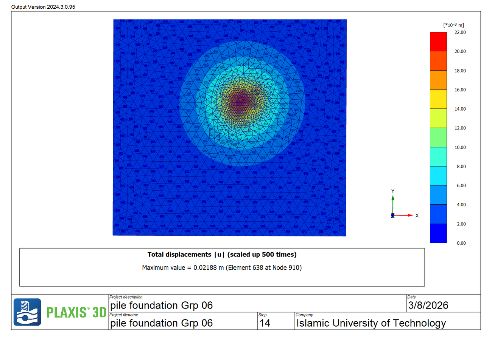
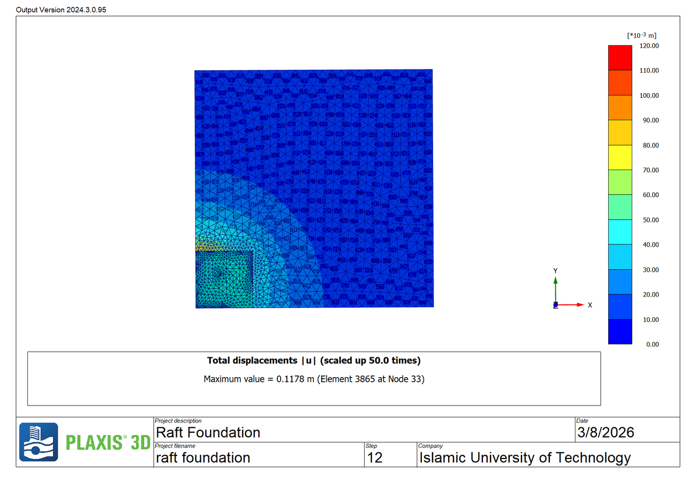

Design projects, coursework and analysis code — the numerical modelling
side of my work.
Pile and raft foundation modelling in PLAXIS 3D
2026
· Final Year Design Project (FYDP) · Group 6
· Model setup, staged construction and output analysis (PLAXIS 3D, v2024.3)
Built three-dimensional finite element models of a pile foundation and a raft foundation on the same soil profile, loaded each to failure through staged construction, and read the ultimate bearing capacity and displacement field from the collapse step.
Result: Pile foundation: 1879.85 kN ultimate capacity, 21.9 mm maximum total displacement. Raft foundation: 2517.30 kN, 117.8 mm — roughly a third more capacity than the piles, at five times the deformation.

Total displacement field at the failure step, pile foundation model.
PLAXIS 3DFinite element analysisFoundation design
Raft foundation: displacement field at collapse
2026
· Final Year Design Project (FYDP) · Group 6
· PLAXIS 3D modelling and post-processing
Companion model to the pile study: the same soil profile carrying a raft, taken to the same limit state so the two systems could be compared on capacity and on the settlement each one imposes on the surrounding ground.
Result: Ultimate bearing capacity 2517.30 kN; maximum total displacement 117.8 mm.

Total displacement field at the failure step, raft foundation model.
PLAXIS 3DRaft foundationSettlement
Solver and PINN implementation for tunnelling-induced settlement
A complex-variable solver for the elastic half-plane with a deforming circular opening (conformal mapping, Laurent-series potentials, least-squares collocation), plus a physics-informed neural network rebuilt in DeepXDE as mixed first-order elasticity. The whole analysis regenerates from source data — every measured point is read from the source workbooks, not digitised off a printed figure.
Result: Boundary residual 10⁻¹⁴; published field case reproduced to within 0.02 mm; PINN matches the analytical solution to 0.77% of peak settlement.